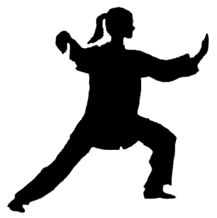

Концепция 8 шаров тайцзицюань

Название 8 шаров тайцзицюань возникло не ради красивого набора слов, оно имеет свой глубокий смысл. И оно понятие не связано непосредственно с известными восьмю триграммами тайцзи, как это может показаться на первый взгляд. Однако, полное исследование восьми шаров тайцзицюань на практике ведет к созданию 8 фигур триграмм, которые являются определяющими для тайцзицюань.
В статье Шар тайцзи мы рассмотрели понятия шара тайцзи и его фрактальное проявление. Давайте теперь рассмотрим, что такое тайцзицюань и сколько существует шаров тайцзицюань?
То, что является определяющим в тайцзицюань, содержится в самом его названии. Цюань в переводе означает кулак. Тайцзицюань – это искусство кулачного боя, основанное на динамическом проявлении принципа тайцзи, т.е. нахождение точки баланса сил в поединке. Тайцзицюань не может быть выполнен в одиночку. Вы видели много красивых, изящных исполнений в делании формы. Это не является определением тайцзицюань. Потому что тайцзицюань – это то, что вы создаете с другим партнером, это то, как вы делаете тайцзи.
То, что было сказано до сих пор относительно Принципа и его фрактального проявления, будет буквально использовано в нашей реальной технике тайцзицюань. При использовании Принципа необходимо учитывать два важнейших фактора. Перавый - это использование входящей силы, чтобы сделать тайцзи. Второй - точное выполнение этого процесса на всех фрактальных уровнях.
О чем идет речь, чтобы стало более понятно, рассмотрим на самом простом уровне. Помните детскую игру «Ладушки?». Партнеры соединяют руки ладонями. Если у нас есть две точки (соединение ладоней), то они могут двигаться хаотично и безумно, или они могут работать в едином кооперативном режиме. Если я толкаю в одной руке, партнер отступает в этой руке, сохраняя контакт. И он также старается найти пустоту в другой ладони. Таким образом он примыкает ко мне. Если мы сотрудничаем, то мы стараемся создать нечто, что ощущается, как точка фокуса, сбалансированная в центре между ладонями. Мы можем чувствовать себя так, словно создали между собой нечто вроде настоящего шара. Чувствовать, что между нами существует некое взаимное давление, которое как бы отталкивает нас назад. Это и есть один из шаров тайцзицюань – точка наступления (Ян), точка отступления (Инь), и точка равновесия (Фокус).
Если хотите что-то более реалистичное, то замените точки контакта. Точками контакта могут быть локоть, плечо, запястье, грудь, спина, живот – любая часть тела, с чем вы соприкоснулись. Перед вами возникает задача – относиться к партнеру как к некоему движущемуся физическому обьекту, а не как к личности. Вы устанавливаете контакт, слушаете, находите баланс сил и играете. Но система взаимодействия с партнером еще более сложная. Для тщательного анализа с точки зрения физики рассматривается механическая модель - конструкция из двух движущихся обьектов из физических шаров, прямо контактирующих друг с другом посредством верхнего интерфейса (рук), и опосредованно контактирующих через пол или землю посредством нижнего интерфейса (ног).
Проблема заключается в том, что тайцзи оперирует в трехмерном пространстве. И поэтому должно создаваться тайцзи, которое является сбалансированным в каждом направлении. Для того, чтобы это сделать, мы и создаем фрактальность тайцзи. В нашей модели число фрактальных уровней не может быть бесконечным по определению в силу того, что она уже оперирует в конечном трехмерном пространстве и имеет сама по себе конструктивные ограничения.
Для понимания всех фрактальных уровней тайцзицюань вводим параметры:
- Собственный центр, относительно которых вращаются наши тела.
- Дистанция или взаимное тайцзи.
- Шар тайцзи между точками контакта в руках, описанный выше.
- Механизм взаимодействия с полом.
- Правильный способ контакта в руках (2 параметра).
- Сохранение плоских стоп (еще 2 параметра).
Общее число параметров, которые определяют соответствующие этим параметрам шары тайцзи, равно 8. Это максимальное число шаров, которые можно обнаружить в этой механической системе!
Подводим итог. Наша динамическая система кулачного боя – это 8 шаров тайцзицюань в трехмерном пространстве. Эти шары полностью динамичны. Если вдруг возникнет какое-либо препятствие их движению, вся система разрушится. Все потому, что шары должны продолжать катиться.
Хорошей иллюстрацией качения шара является катящееся колесо телеги. Допустим, у телеги есть спицы. Причем две из них имеют контакт с землей. Это аналог контакта в руках. Колесо прокатилось, спицы поменялись, их по- прежнему осталось две, только новых.
Такой принцип отслеживается и при работе с партнером. В нашем примере в качестве партнера выступает земля, но может быть и другое колесо телеги. Тогда мы имеем систему из двух колес, сцепленных друг с другом и контактирующих в местах соприкосновения двух спиц.
Большая часть техники парной работы посвящена тому, как держать шары в движении на всех уровнях, а также эффектам, возникающим из-за попытки противника остановить эти движения . Для этой цели было разработано целое многообразие одиночных и парных упражнений. Именно правильное исполнение и понимание этих упражнений и определяют действительный стиль Ян. Стиль Ян является целостной системой, основанной на использовании одного Принципа Тайцзи для передачи информации и обеспечения перемен между 8 боевыми идеями (триграммами), а также для правильной работы ног, чтоб позволить реализовать эти идеи.
Тайцзицюань действительно можно считать искусством. Адепты тайцзицюань иногда утверждают, что можно было бы представить себе еще более сложное боевое искусство, но тогда нельзя было бы найти никого, кто смог бы прожить достаточно долго, чтобы полностью овладеть им.
Но это не означает, что сложно или даже невозможно стать мастером в течение жизни. Мастерство достижимо, но это потребует много времени. Относитесь к идее занятий тайцзицюань как к хобби, а к процессу обучения как профессионал. Вы получите массу пользы от занятий. Это и гимнастика для тела, для здоровья и для ума. Тайцзицюань развивает внутреннюю силу во всех ее проявлениях – дух, энергия, интеллект и чувство юмора.